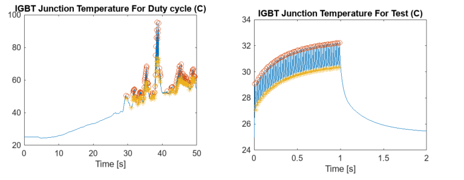

Estimate Inverter Power Module End of Life
Inverter life is governed by thermal fatigue of the power-module solder joints and wire bonds, seen as a rise in thermal resistance beyond a degradation limit. Suppliers quote cycles-to-failure only for a standard test cycle (for example 1 s on, 1 s off), so translating that to a real driving scenario is difficult.
This workflow converts the junction-temperature swings the module experiences over a drive cycle into an equivalent number of standard test cycles, using the power-cycling model from Thoben et al. From the duty and test junction-temperature histories, the peak test current, and the end-of-life thermal resistance, it reports inverter life in vehicle cycles.
Quick Setup
- Open the workflow Live ScriptOpen Live Script
Open
inverterPowerModuleLife.mlxand select the drive cycle and end-of-life thermal-resistance criterion (EOLrth). - Choose reference data or run the simulationsOpen simulation runner
Review
InverterTemp.matandTestCycleTemp.mat, or runrunInverterLifeto regenerate the duty-cycle and accelerated-test results. - Set the duty cycle on the thermal test benchOpen thermal test bench
Run the selected drive cycle to record phase-C IGBT and diode junction temperatures and motor current.
- Count equivalent test cyclesOpen cycle counting
Run
countEqTestto convert the duty-cycle temperature swings into an equivalent number of accelerated test cycles. - Fit the duty-cycle lifetime and runOpen duty-life calculation
Run
getDutyLifeto calculate duty-cycle lifetime and generate the junction-temperature and lifetime results.
Key Models and Components
| Model or component | Role | Reference |
|---|---|---|
| MotorDriveGearTh | Resolves IGBT and diode junction temperatures during the duty cycle. | View component |
| Inverter accelerated test cycle | Provides the reference thermal swing and peak current for equivalent-cycle calculations. | Open model |
Expected Results

The workflow produces these result types:
- Junction-temperature duty and test-cycle profiles
- Rainflow cycle count and amplitudes
- Equivalent cycles and estimated duty life
Supporting Files
| Purpose | Artifact | Action |
|---|---|---|
| Main workflow | inverterPowerModuleLife.mlx | Open Live Script |
| Simulation runner | runInverterLife.m | Open file |
| Cycle counting | countEqTest.m | Open file |
| Duty-life calculation | getDutyLife.m | Open file |
Checks Before Using Results
- Confirm temperature units before cycle counting.
- Inspect the rainflow bins rather than trusting only the final scalar.
- Treat the lifetime estimate as conditional on the active power-cycling model.